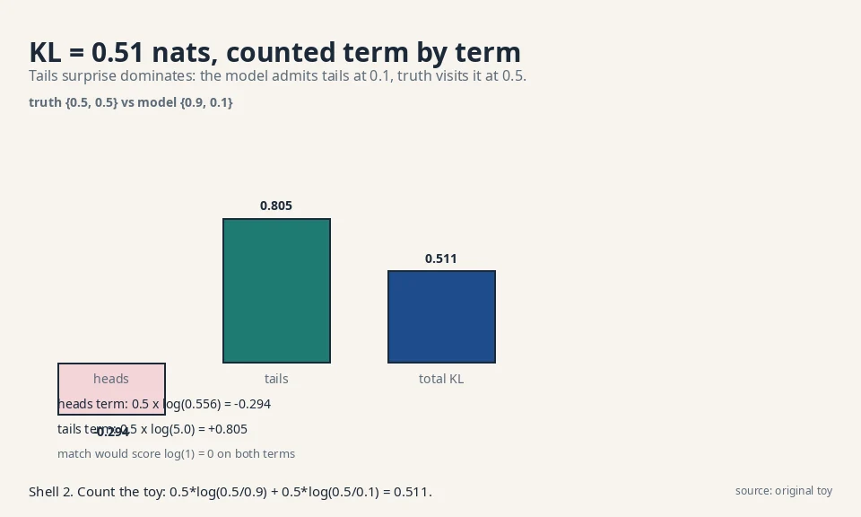
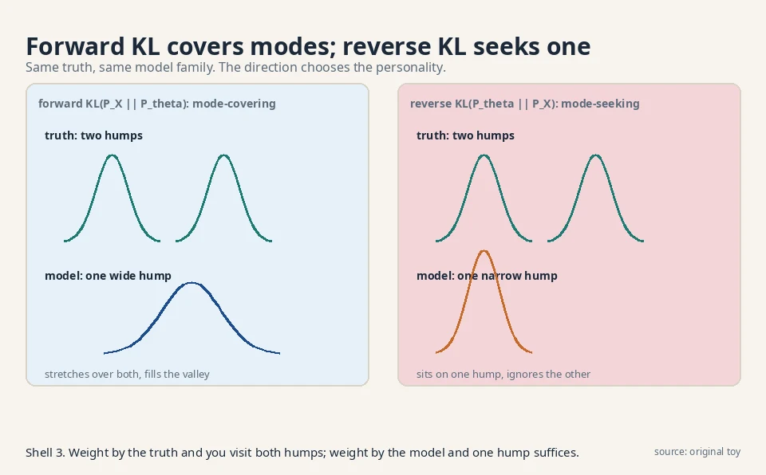
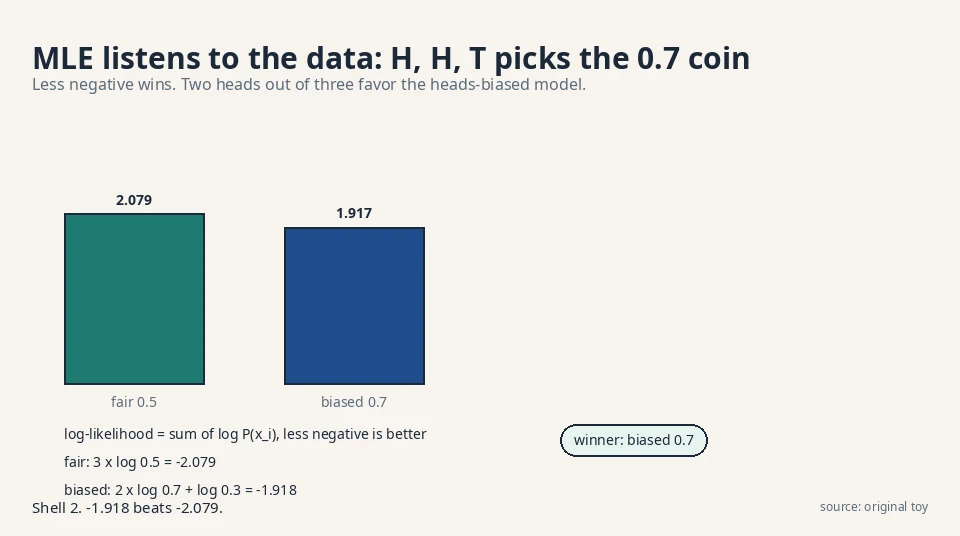

Lecture 2: KL Divergence and Maximum Likelihood
Video blocked (ad-blocker or local file mode).
Watch on YouTubeVideo not loading? Watch on YouTube
The lecture video for this lesson: KL as the u log u member of the f-divergence family. Timestamps in the text link to the exact moment.
The task: score the distance between two rules
Lesson 1 ended with a gap. The recipe needs a divergence: one number that says how far the model P_θ is from the truth P_X. But what does “far” mean for two probability rules?
Start with a toy you can hold. A coin. The true coin is fair: P_X = {heads: 0.5, tails: 0.5}. Two candidate models disagree:
truth P_X: heads 0.5, tails 0.5 model A: heads 0.9, tails 0.1 model B: heads 0.5, tails 0.5
Model B matches. Model A is lopsided. A divergence must give B a score of zero and A a positive score, and it must say how much worse A is. The naive idea, subtract the probabilities and add the absolute differences, gives |0.5 − 0.9| + |0.5 − 0.1| = 0.8. That works here, but it treats all errors alike. Probability has a sharper idea: errors on rare events cost more.
First attempt: average the surprise ratio
Think about what the model claims per outcome. Model A says heads has probability 0.9 while the truth says 0.5. The ratio is 0.5 / 0.9 = 0.556: the truth thinks heads is only about half as likely as the model claims. For tails the ratio is 0.5 / 0.1 = 5: the truth thinks tails is five times likelier than the model admits. The model is badly wrong about tails and mildly wrong about heads.
The log ratio per outcome
The KL divergence averages the log of these ratios, weighted by the truth:
KL(P_X || P_theta) = sum over x of P_X(x) * log( P_X(x) / P_theta(x) )
Read it piece by piece. P_X(x) is how often outcome x really occurs. The log ratio log(P_X(x) / P_θ(x)) is the surprise in that outcome: positive when the model underestimates, negative when it overestimates. The sum weights each surprise by how often the truth visits it. Underestimating a common outcome hurts a lot. Underestimating a rare one barely registers.
The log is doing real work. Ratios multiply across independent outcomes. Logs turn products into sums, so surprise adds up across a dataset. The unit is the nat (natural log). Base 2 gives bits. One nat = 1.44 bits.
Worked by hand: 0.511 nats
Work model A by hand. Use natural log (base e).
KL = 0.5 * log(0.5 / 0.9) + 0.5 * log(0.5 / 0.1) = 0.5 * log(0.556) + 0.5 * log(5.0) = 0.5 * (-0.588) + 0.5 * (1.609) = -0.294 + 0.805 = 0.511 nats
Model A scores 0.51. Model B, which matches the truth, scores log(1) = 0 on both terms: exactly zero. The divergence behaves: zero when the rules match, positive otherwise. The lecture proves this in general: KL is always non-negative, and it is zero if and only if the two distributions are equal.

The zero-probability landmine
Two facts about KL shape everything after. First, it is not symmetric. KL(P_X || P_θ) is not KL(P_θ || P_X). The weighting is by the first distribution, so the two directions punish different mistakes. Second, it explodes when the model assigns zero probability to an outcome the truth produces: log(P_X / 0) is infinite. A model that says “tails is impossible” pays an infinite price the first time tails appears.
The landmine has a practical consequence. No trained model may assign exact zero to any plausible outcome. Every output distribution needs a floor: a tiny probability everywhere. In language models this is why the softmax never truly reaches 0. In image models it is one source of the washed-out look: the model hedges.
Where symmetry breaks: forward versus reverse
The sharp toy: 0.693 versus infinity
Compute both directions on a sharper toy. The truth puts all its mass on heads: P_X = {1.0, 0.0}. The model hedges: P_θ = {0.5, 0.5}.
forward KL(P_X || P_theta) = 1.0 * log(1.0 / 0.5) = log(2) = 0.693
reverse KL(P_theta || P_X) = 0.5 * log(0.5 / 1.0) + 0.5 * log(0.5 / 0.0)
= -0.347 + infinity = infinity
The forward KL is a calm 0.69. The reverse KL is infinite, because the truth assigns zero to tails while the model spends half its mass there. Same pair of distributions, wildly different scores. The lecture names these: forward KL (weight by the truth) and reverse KL (weight by the model). Generative modeling almost always minimizes the forward KL: weight by the data you have.
Mode-covering versus mode-seeking
The forward KL has a personality worth knowing. It is mode-covering. Suppose the truth is two humps (two kinds of faces) and the model is one hump. The forward KL averages over the truth, so it visits both humps and punishes the model for the hump it ignores. The model is pushed to stretch over both. The reverse KL is mode-seeking: it averages over the model, so a one-hump model that sits exactly on one true hump pays almost nothing for ignoring the other. Lesson 4 shows this personality causing mode collapse in GANs, which optimize a different divergence.

The decision rule: which direction, when
Use forward KL when you have data from the truth and a model that must explain all of it. That is almost every generative task: the data is fixed, the model is flexible. Use reverse KL when the model is the thing you trust and you want it to concentrate: variational inference often minimizes reverse KL because it yields a tidy, compact approximation. The price of reverse KL is dropped modes. The price of forward KL is blurry compromise between modes. Pick your poison by naming which failure you can tolerate.
The key question
We chose KL. Now: given only samples from P_X, no formula for it, how do you actually turn the knob θ to shrink KL(P_X || P_θ)?
The new idea: minimizing KL is maximizing likelihood
The split: entropy plus KL
Expand the KL definition and watch it split:
KL(P_X || P_theta) = sum_x P_X(x) * log P_X(x) - sum_x P_X(x) * log P_theta(x) = (entropy of P_X) - E[ log P_theta(x) ]
The first term depends only on the truth. It has no θ in it. When you turn the knob, that term does not move. So minimizing KL over θ is exactly maximizing the second term: E[log P_θ(x)], the average log-probability the model assigns to real data. This quantity is the likelihood (in log form), and maximizing it is maximum likelihood estimation, MLE.
This is the lecture’s central identity, and it is why the whole field trains the way it does:
argmin_theta KL(P_X || P_theta) = argmax_theta E[ log P_theta(x) ]

The sample average replaces the expectation
Now the sample problem dissolves. The expectation is over P_X, and we have samples from P_X. Replace the expectation with the sample average (the law of large numbers blesses this):
argmax_theta (1/n) * sum over data log P_theta(x_i)
This is the training objective of half of machine learning. Given data points x_1 … x_n, pick θ so the model assigns them the highest total log-probability. No formula for P_X needed. Just the data and a model whose probabilities you can compute.
Worked: H, H, T picks the 0.7 coin
Watch it choose between two models on three coin flips: H, H, T.
model A (fair): P = 0.5 each
log-likelihood = log 0.5 + log 0.5 + log 0.5 = 3 * (-0.693) = -2.079
model B (heads 0.7): P(H) = 0.7, P(T) = 0.3
log-likelihood = log 0.7 + log 0.7 + log 0.3
= (-0.357) + (-0.357) + (-1.204) = -1.918
Model B wins: −1.918 beats −2.079 (less negative is better). Two heads out of three favor the heads-biased coin. MLE listened to the data. With more flips the winner converges to the true bias. That is the whole training procedure for every model in this course whose densities can be written down.

Entropy: the floor you cannot beat
The leftover term has a name too. The entropy of P_X, −sum P_X log P_X, measures the truth’s own unpredictability. A fair coin has entropy 0.693 nats. A coin that always lands heads has entropy 0: no surprise at all. MLE cannot beat the entropy. The best possible average log-likelihood is exactly minus the entropy, reached when P_θ = P_X and the KL hits zero.
The middle row of the table deserves one line: the thing you minimize in practice, −E[log P_θ(x)], is called cross-entropy. It equals entropy plus KL. Since entropy is constant in θ, minimizing cross-entropy and minimizing KL are the same search.
| Quantity | Formula (discrete) | Meaning |
|---|---|---|
| KL divergence | sum P_X log(P_X / P_θ) | Distance from truth to model, in nats |
| Cross-entropy | −sum P_X log P_θ | What you actually minimize. Equals entropy + KL |
| Entropy | −sum P_X log P_X | The truth’s own unpredictability. The floor |
| MLE objective | (1/n) sum log P_θ(x_i) | Sample version of minus cross-entropy |
Where this runs in real systems
Next-token training of language models is this lesson, at scale. Each training step computes cross-entropy between the model’s predicted distribution over the vocabulary and the actual next token. By this lesson’s identity, that is forward KL to the text distribution, estimated on samples. The VAE reconstruction term (Lesson 7) is the same: expected log-likelihood under the decoder. The diffusion denoising loss (Lesson 9) is a reweighted form of it. One identity, three architectures.
KL = cross-entropy − entropy. The entropy never moves when you turn θ. So min-KL, min-cross-entropy, and max-likelihood are three names for one search. If an interviewer asks which one you optimize, answer: all three, they are the same knob turn.
The honest price: three ways MLE bites
MLE is the default, but the lecture is clear-eyed about its costs, and each one motivates a later lesson.
First, the infinite penalty. If P_θ assigns zero probability to a real outcome, the log-likelihood is −infinity. One bad point kills the whole fit. In practice this forces every model to keep a little probability everywhere, which is why generated images sometimes look washed out: the model hedges. The price is measurable: on the coin toy, moving the model from {0.9, 0.1} to {0.99, 0.01} raises the KL from 0.51 to 1.61 nats. Sharper hedging, steeper bill.
Second, forward KL is mode-covering, which sounds good until the family is too small. A one-hump model covering two humps puts mass in the valley between them, where the truth has none. The samples look like blends of two faces: blurry averages. This is the classic VAE blur, and Lesson 7 traces it to this exact mechanism. The number to remember: with two unit Gaussians at −3 and +3, the best single Gaussian sits at mean 0, and fully half its mass lands where the truth has almost none.
Third, MLE needs the density. You must be able to compute log P_θ(x) for each data point. Push-forward models (Lesson 1) give samples but no density formula. For them, MLE is uncomputable, and the course needs the adversarial machinery of Lessons 3 and 4. The recipe forks here: models with tractable densities go the MLE/ELBO route, models without go the GAN route.
Videos for this lesson
Second lecture video for this lesson: the variational road to the same divergence. If the embed is blocked: watch on YouTube.
External explainer: StatQuest builds entropy from zero, the floor under this lesson's identity. If the embed is blocked: watch on YouTube.
A weighted average of log surprise ratios: KL(P_X || P_θ) = sum P_X(x) log(P_X(x)/P_θ(x)). In the coin toy, truth {0.5, 0.5} against model {0.9, 0.1} scores 0.51 nats. It is always non-negative and zero only when the distributions match exactly. The weights come from the first distribution. Forward KL(P_X || P_θ) punishes the model for ignoring real outcomes. Reverse KL(P_θ || P_X) punishes it for inventing impossible ones. In the sharp toy, forward was 0.693 and reverse was infinite. Generative training uses the forward direction.
Truth {0.25, 0.75}, model {0.5, 0.5}. Term one: 0.25 * log(0.25/0.5) = 0.25 * log(0.5) = 0.25 * (−0.693) = −0.173. Term two: 0.75 * log(0.75/0.5) = 0.75 * log(1.5) = 0.75 * 0.405 = 0.304. Total: 0.131 nats. Small, because the model is close to the truth on the outcome the truth visits most. Term one becomes 0.25 * log(0.25/0) = 0.25 * infinity = infinity. One zero on a visited outcome kills the whole score. That is the landmine, and it is why real models never output exact zeros.
They are the same search. KL splits into the truth’s entropy (no θ in it) minus E[log P_θ(x)]. Dropping the constant turns min-KL into max-likelihood, and the expectation becomes a sample average: (1/n) sum log P_θ(x_i). On three flips H, H, T, the 0.7-heads model beat the fair model, −1.918 versus −2.079. Minus that expectation: −E[log P_θ(x)]. It equals entropy plus KL. Minimizing cross-entropy, minimizing KL, and maximizing likelihood are three names for one optimization.
Forward. The data is fixed and the model must explain all of it: weight by the truth. Reverse KL would let a one-hump model sit on one kind of photo and ignore the rest, which is mode collapse wearing a tuxedo. The price of forward KL is the opposite failure: a too-small family blurs modes together instead of dropping them. In variational inference, when you want a compact approximation you trust. Reverse KL concentrates the approximation on one region instead of smearing it. You accept dropped modes in exchange for a tidy fit.
Three things. A single zero-probability data point sends the objective to −infinity, so models hedge and look blurry. Forward KL is mode-covering: a too-small family stretches over all modes and generates in-between blends. And MLE needs a computable density, which push-forward models like GAN generators do not have. Never let the model assign exact zeros: add a small floor to every probability, or use families (like Gaussians) with infinite support. The cost is the hedging blur. There is no free fix. It is the price of the forward KL.
It means the model’s predicted distribution sits 2.1 − H nats from the true text distribution, where H is the true entropy of language (unknown, but fixed). Since cross-entropy = entropy + KL, a drop from 2.5 to 2.1 is a KL drop of 0.4 nats: the model moved 0.4 nats closer to real text. Perplexity is just exp of this number: e^2.1 ≈ 8.2. No. KL is non-negative, so cross-entropy ≥ entropy always. The entropy is the floor. A reported cross-entropy below any plausible entropy estimate means the evaluation is broken: usually train-test leakage.
The VAE maximizes the ELBO, which contains a reconstruction term equal to expected log-likelihood: forward KL territory, mode-covering. Expect sharp coverage of all face types but some blur. The GAN’s discriminator estimates a Jensen-Shannon-like divergence from samples: no density needed, sharper samples, but the reverse-KL-like personality risks dropping rare face types. Same data, different divergences, different failure modes. The VAE family. Mode coverage is the requirement. Forward KL is the divergence that enforces it. You accept the blur and fix it later with a better decoder. A dropped mode is a silent failure. Blur is a visible one.
Recap: the whole lesson on one screen
- The job. Score the distance between the truth P_X and the model P_θ with one number.
- First attempt. Average the log surprise ratios, weighted by the truth: the KL divergence.
- Worked. Truth {0.5, 0.5} vs model {0.9, 0.1}: KL = 0.51 nats. Exact match scores 0.
- Asymmetry. Forward KL 0.693 vs reverse KL infinite on the sharp toy. Forward is mode-covering.
- The key question. How do you shrink KL with only samples, no formula for P_X?
- The identity. KL = entropy − E[log P_θ]. Drop the constant: min KL = max likelihood.
- Worked. On H, H, T, the 0.7 model beats the fair one, −1.918 vs −2.079. Sample average replaces expectation.
- The price. Infinite penalty on zeros, mode-covering blur, and MLE needs a density the push-forward models lack.
Official sources and further reading
Official: - W1L3: f-Divergence: - KL as the u log u member of the family. Forward vs reverse. - W1L4: Variational divergence minimization: paper
Further reading: - Murphy, “Probabilistic Machine Learning: An Introduction”, ch. 4: KL, cross-entropy, MLE in one place. - The f-divergence view (Lesson 3) generalizes everything here.
Caveats. The KL definition, its properties, and the min-KL = max-likelihood identity are confirmed in the W1L3 transcript. The coin toys and the H/H/T comparison are the lesson’s own worked examples. [uncertain] The lecture’s exact numeric examples are unknown.
Connections to the other courses
- CS229 L10 (EM/PCA): EM maximizes likelihood for latent-variable models by alternating: guess the hidden assignments, then refit. Each EM step is shown in that course to never decrease the likelihood. This lesson’s identity is why: EM is MLE with missing data, and Lesson 6 derives its modern form (ELBO) from the same KL.
- CS336: language models are trained by next-token cross-entropy, which this lesson identifies as forward KL to the data distribution. A worked tie: a model assigning probability 0.8 to the true next token on 4 tokens scores cross-entropy −(log 0.8 × 4)/4 = 0.223 nats per token. Lower is closer to the true text distribution.